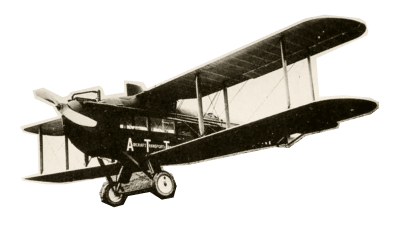

Этапы преображения Васюков Будущие источники обогащения васюкинцев
1
Строительство железнодорожной магистрали Москва-Васюки
2
Открытие фешенебельной гостиницы «Проходная пешка» и других небоскрёбов
3
Поднятие сельского хозяйства в радиусе на тысячу километров: производство овощей, фруктов, икры, шоколадных конфет
4
Строительство дворца для турнира
5
Размещение гаражей для гостевого автотранспорта
6
Постройка сверхмощной радиостанции для передачи всему миру сенсационных результатов
7
Создание аэропорта «Большие Васюки» с регулярным отправлением почтовых самолётов и дирижаблей во все концы света, включая Лос-Анжелос и Мельбурн
